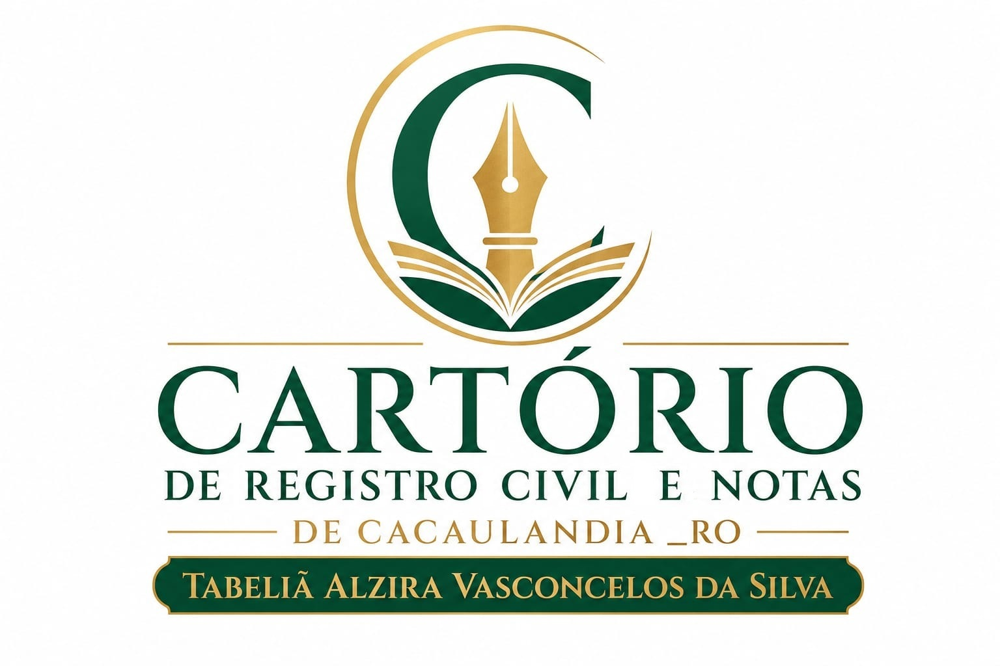

👶
Registro de Nascimento
Registro de nascimento com emissão da primeira certidão gratuitamente. Prazo legal de 15 dias do nascimento.

Registro civil, escrituras, procurações, certidões e muito mais — atendendo Cacaulândia e região com responsabilidade e fé pública.
Todos os serviços extrajudiciais que você precisa em um só lugar.
Registro de nascimento com emissão da primeira certidão gratuitamente. Prazo legal de 15 dias do nascimento.
Processo completo de habilitação para casamento civil, incluindo casamento religioso com efeito civil.
Registro de óbito e emissão de certidão. A primeira via é gratuita para todos os cidadãos.
Emissão de certidões de nascimento, casamento e óbito. Inteira ou breve.
Compra e venda, doação, permuta, divisão, partilha amigável, declarações e outros atos notariais.
Procurações públicas para representação em atos civis, bancários, imobiliários e administrativos.
Reconhecimento por autenticidade ou semelhança de assinaturas em documentos particulares.
Autenticação de cópias de documentos, conferindo-lhes fé pública e validade legal.
Divórcio consensual por escritura pública, sem necessidade de processo judicial, rápido e seguro.
Escritura pública de reconhecimento, dissolução ou conversão de união estável em casamento.
Inventário e partilha de bens por escritura pública quando todos os herdeiros são maiores e capazes.
Lavratura de testamento público perante o tabelião, com plena validade jurídica e segurança.
Valores oficiais conforme tabela do Tribunal de Justiça de Rondônia.
| Ato / Serviço | Observação | Valor Aproximado |
|---|---|---|
| Registro de Nascimento | 1ª via — gratuita para todos | Gratuito |
| Certidão de Nascimento | 2ª via em diante | Conforme tabela TJRO |
| Registro de Casamento | Inclui habilitação | Conforme tabela TJRO |
| Certidão de Casamento | Inteira ou breve | Conforme tabela TJRO |
| Registro de Óbito | 1ª via — gratuita para todos os cidadãos | Gratuito |
| Certidão de Óbito | 2ª via em diante | Conforme tabela TJRO |
| Reconhecimento de Firma | Por assinatura (semelhança ou autenticidade) | Conforme tabela TJRO |
| Autenticação de Documento | Por folha autenticada | Conforme tabela TJRO |
| Procuração Pública | Por ato lavrado | Conforme tabela TJRO |
| Escritura de Compra e Venda | Valor proporcional ao bem | Consultar serventia |
| Divórcio Extrajudicial | Consensual, sem filhos menores | Consultar serventia |
| Inventário Extrajudicial | Proporcional ao monte-mor | Consultar serventia |
| Tabela de emolumentos aprovada pelo TJRO. Atualização: 2026. Para valores exatos, entre em contato: (69) 3532-2033. | ||
Estamos à disposição para atender sua demanda com agilidade.
Endereço
Av. João Falcão, 2100 – Centro
Cacaulândia – RO – CEP 76889-000
Telefone (69) 3532-2033
E-mail contato@vasco.not.br
Site vasco.not.br
Segunda a Sexta-feira
08h00 às 12h00 | 13h00 às 16h00
Sábados, domingos e feriados: fechado